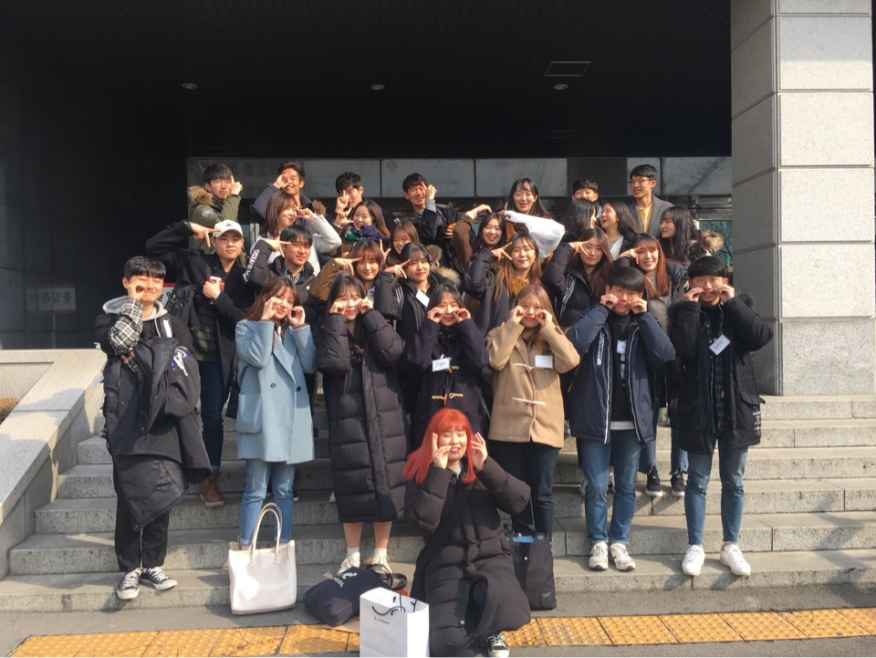
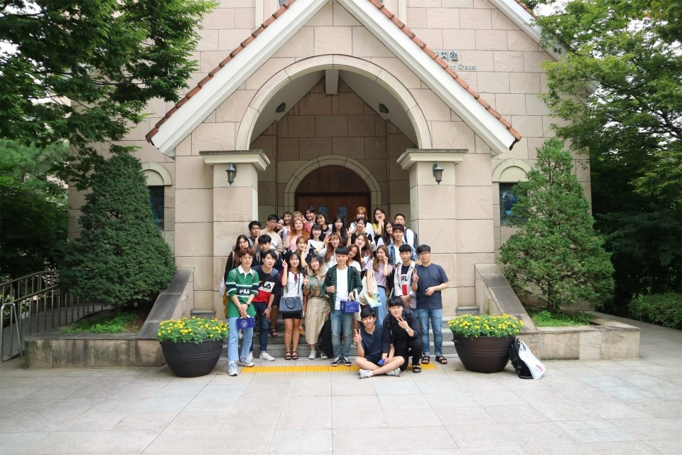
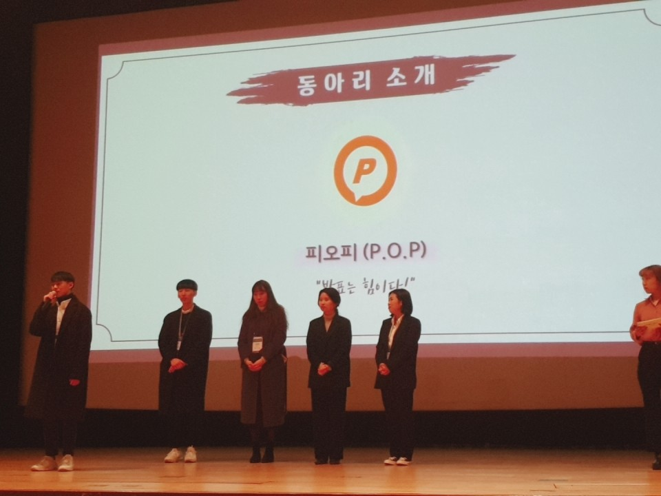
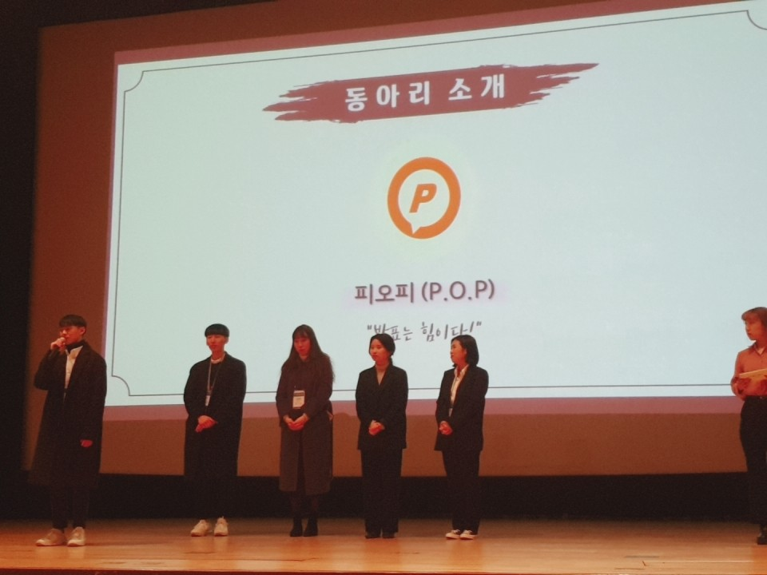

SPECIALITY
Power Of Presentation
피오피가 걸어온 길
P.O.P(피오피)는 "Power Of Presentation"의 약자로
2009년 9월에 창립된 대학생연합발표토론동아리입니다
1기 Special One을 시작으로
현재 21기 POPILLION이 활동하고 있습니다.
인정받는 동아리, 피오피!
아웃캠퍼스 명품동아리 TOP 13, TOP 10 선정!
2018 UnivExpo 최우수동아리 선정!
제 1회 스펙업 대표동아리 30 선정!
피오피는 오랜 기간 동안의 질 높고 꾸준한 활동으로 대내외적으로 인정받고 있습니다.
모두 만족할 수 있는 동아리
피오피는 운영진과 회원으로 구성되어 있습니다.
회장단, 기획집행부, 인사재정부, 학술교육부, 홍보디자인부로
네 개의 부서가 있습니다.
모든 피오피인들은 각 부서에 속하게 되며
부서별 특성에 맞춰 동아리를 꾸려나갑니다.
이러한 체계성으로
피오피는 대표적인 대학생연합발표토론동아리로 자리잡을 수 있었습니다.
회장단 = 동아리 운영 총괄, 대학생연합동아리들간의 교류 주관
기획집행부 = 커리큘럼 장소 예약 / 홈커밍데이, 창립제, MT, 경쟁PT, 연합PT:'피날래' 기획 및 진행
인사재정부 = 출결, 벌금 및 미수금 관리 / 팀 및 친목조 배정 / 차기수 모집
학술교육부 = 커리큘럼 발표 및 토론 주제 선정, 피드백지 관리 / 토론배틀, 세미나, 1분 스피치 주관 / 수료증 담당
홍보디자인부 = 대내외 홍보 총괄 / 피오피 공식 SNS 관리 / 팝진 제작 담당
 


 
